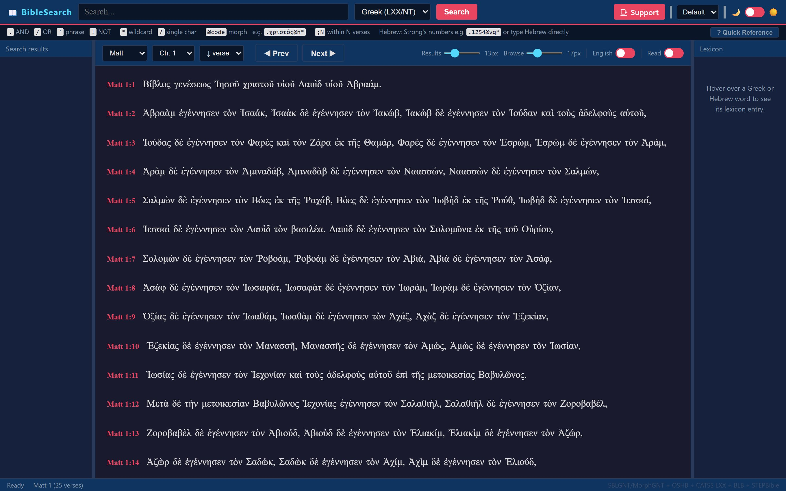
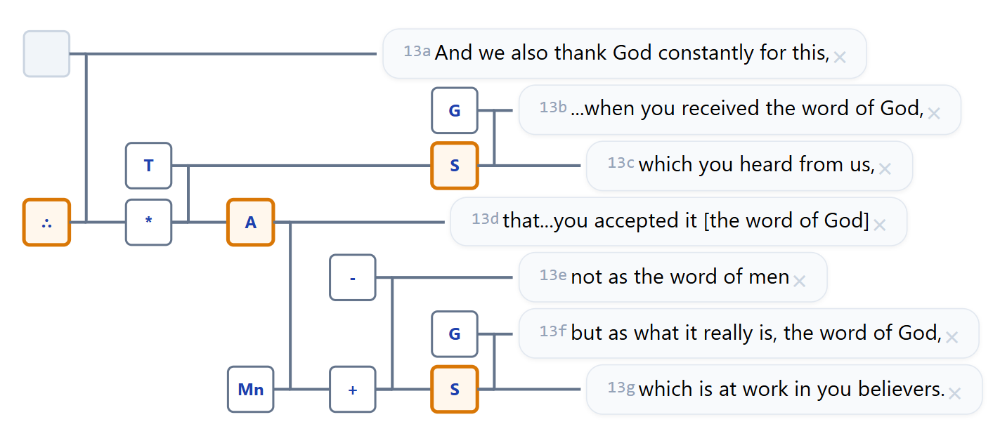
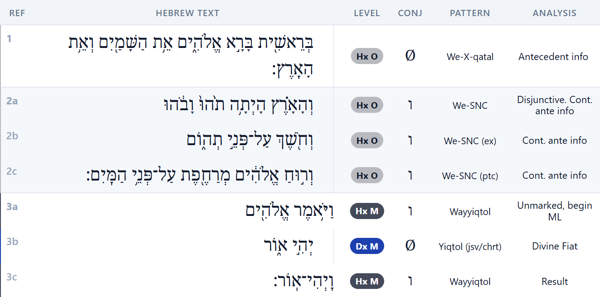
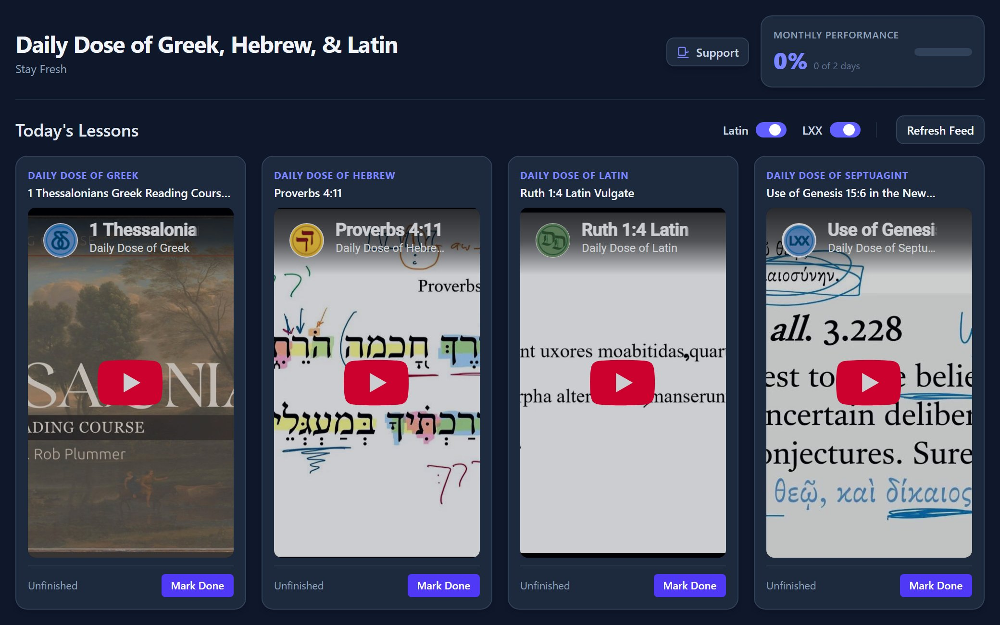
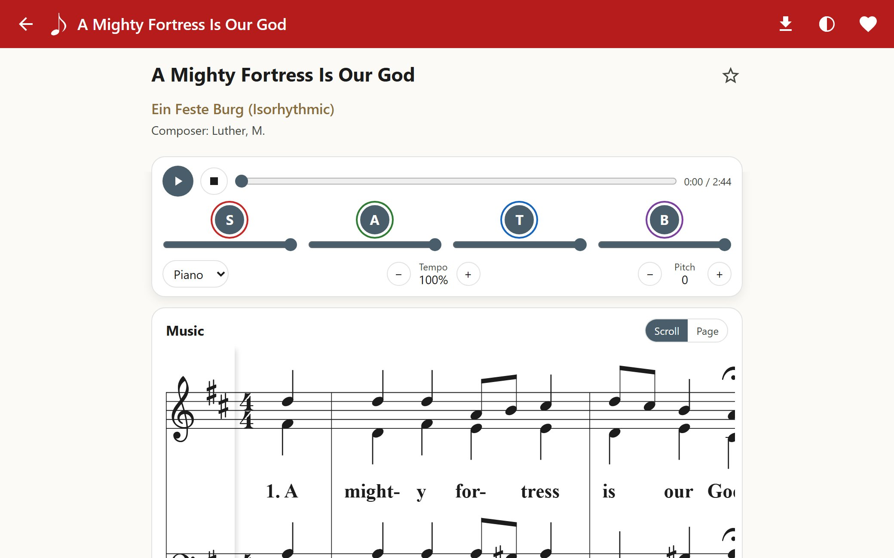
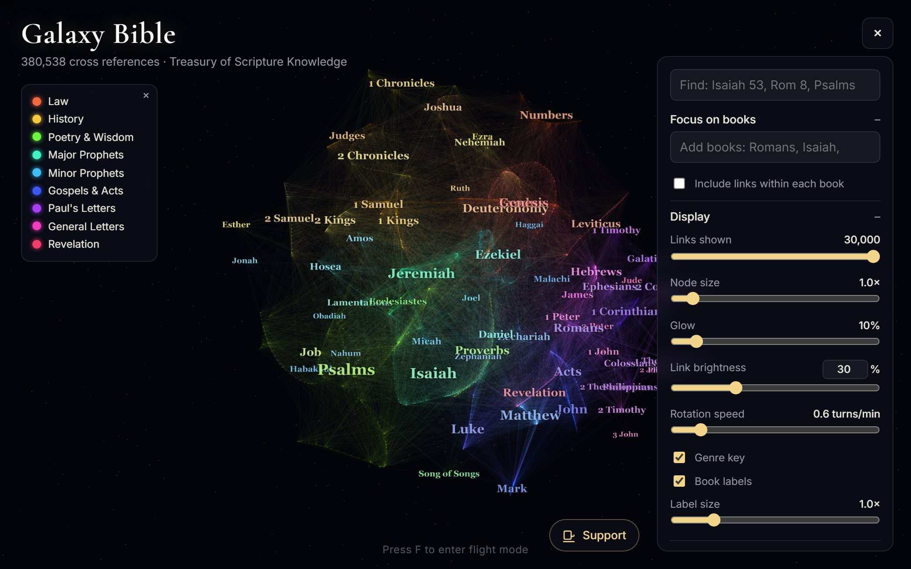
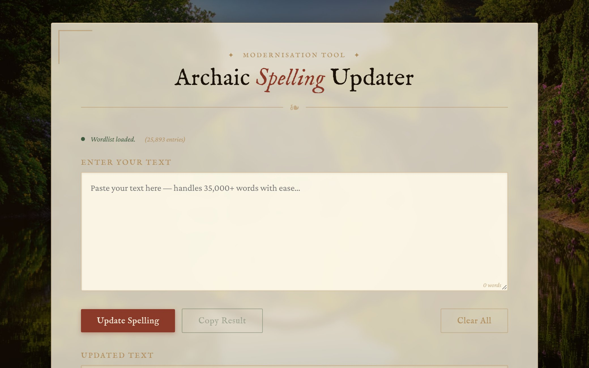

Tools
Study the text

BibleSearch
A Hebrew and Greek search engine in the spirit of BibleWorks.

Discourse Analysis Tool
Visual discourse analysis — bracket and trace the argument of a passage.

Hebrew Discourse Analysis
Exegetical tool for the visual analysis of Hebrew prose.

Daily Bible
The latest Daily Dose of Greek, Hebrew, and Latin, with a habit tracker.
Sing & explore

Let's Sing
Learn your part: hymns and psalms in four-part harmony, one voice at a time.
Family Worship
Daily Bible reading, catechism, and hymns for the family, with streaks to keep the habit.

Bible Galaxy
A 3D galaxy of cross references showing how every part of the Bible connects.

Spelling Updater
Modernizes archaic English spellings from a 25,000-word list.
Games
Writing
Support this work
These tools are free and will stay that way. If they've helped you, a gift keeps them running and improving.
Buy me a coffee